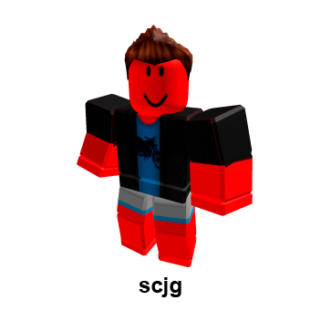
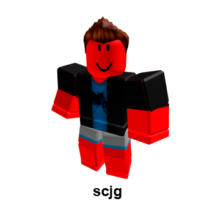
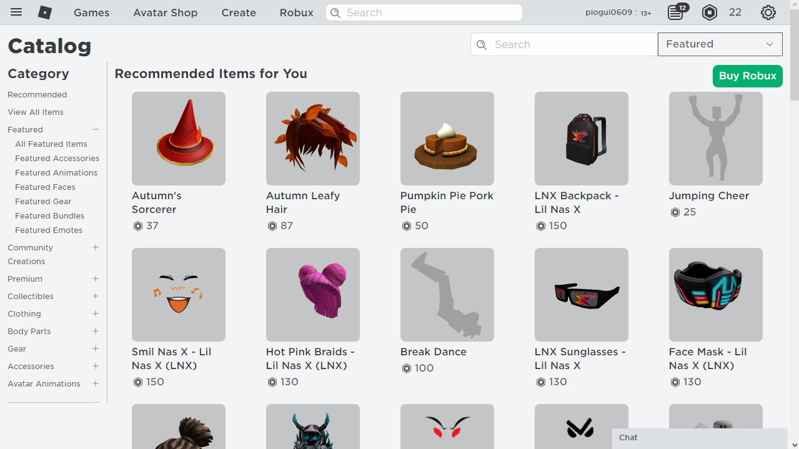

Avatares
 

Esses são os avatares dos criadores do site
O que são os avatares?
Avatares são os personagens que existem no jogo, você pode personalizar o seu do jeito que quiser, com diversas roupas, tamanho do personagem, cabelos, etc.
Catálogo
No catálogo é possível comprar as skins que o jogo possui, animações (as quais mudam a forma que o personagem anda), e até mesmo itens extras dentro do jogo, como balões que te fazem voar, maçãs que te dão vida, etc.
Esses cosméticos são comprados com Robux, a moeda do jogo em que se consegue gastando dinheiro de verdade.
